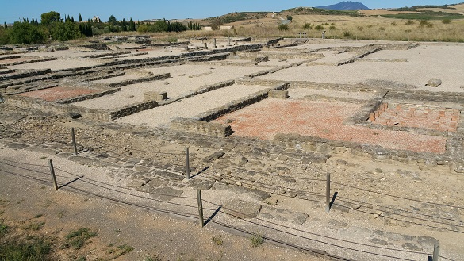

|
MENDIGORRÍA
La ciudad de Andelos alcanzó una extensión máxima
de 18 hectáreas. Se han encontrado en las poblaciones de los alrededores algunos miliarios. La importancia de Andelos plantea la posibilidad de que esta ciudad estuviera situada en un cruce de caminos. Datan del siglo II-IV. También destacan las termas publicas de la ciudad, el castellum aquae y su cardo y decumano.
 Ver Vídeo Su sistema de abastecimiento de aguas, con su depósito regulador con capacidad para 7.000 m3. Con unas medidas de 85x37 metros en sus ejes máximos. Está reforzado con contrafuertes interiores para aguantar el empuje de la tierra cuando el depósito estaba vacío. Se amplió su capacidad doblando casi su tamaño. Distribuía el agua hacia el acueducto, que la transportaba hasta la ciudad. Datados en el siglo I. Se localiza a 400m del yacimiento. A 3,5 kilómetros de la ciudad de Andelos, en el límite de los municipios de Mendigorría y Cirauqui. En este lugar se encuentra la presa con una capacidad de 20.000 m3, de unos 150 metros de longitud. Aconsejamos ver los videos de Isaac Moreno Gallo.
Ver: Presas romanas
|